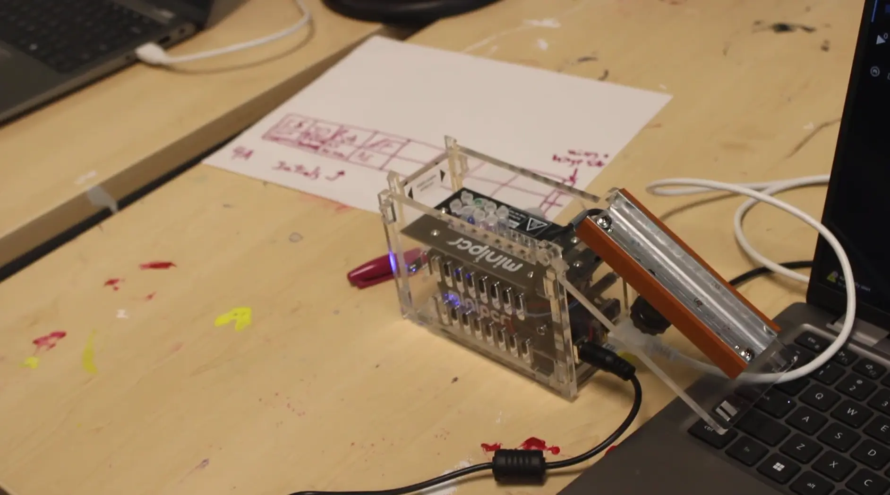
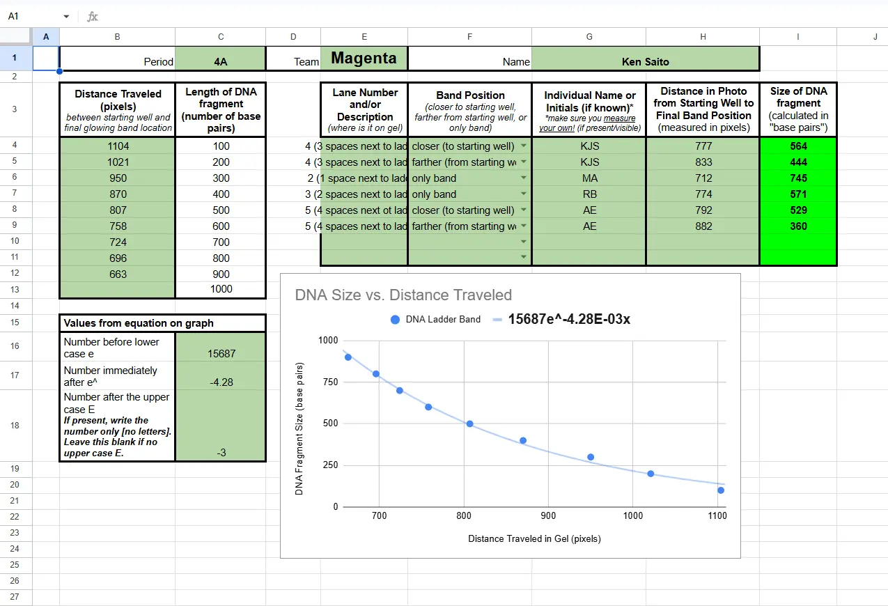

Biotech Breakthroughs
The Experiment
The Biotech Breakthroughs experiment was done to analyze students' DNA and see which of our peers are closest to each other in terms of VNTRs (Variable Number Tandem Repeats). I predicted that I would match with other East Asians as I thought race would play a major factor in who we are close to genetically. First, I extracted cells from my cheek with a toothpick, and through a series of processes, separated the DNA from the cells using lysis solutions and concentrated salt solutions. After the DNA was separated, it was put into a PCR machine to duplicate the samples of DNA into billions of copies, and was tested through gel electrophoresis. I measured how far my DNA traveled across a gel matrix in Adobe Photoshop, and I analyzed my results using a google sheet and compared it with other students. Based on the data, I was able to conclude that many of the students closest to me genetically were of different races, unlike how I expected. I learned that race isn’t a relevant factor when determining similarities of people’s genetics, and I finally understood what the phrase, “race is a social construct,” meant.
The Documentary
As a group, my table and I had to make a documentary documenting the steps of the experiment, as well as predictions, reactions, and a stop-motion video explaining the structure of DNA. Each groupmate worked on a different section of the documentary, with mine being the introduction, as well as helping with the stop-motion video. I learned how to better cooperate with others as all of us had to do our part in the project, honing my teamwork skills.
21st Century Skills
During this project, Creativity and Innovation, along with Communication and Collaboration, were major 21st century competencies I got better at. When editing the interview, I didn’t have many reaction shots of the interviewer, Ryan, so I had to be creative and resourceful with the footage I already had. In the end, I was able to make an interesting interview with a natural flow. For Communication and Collaboration, my group and I had to keep track of what everyone was doing, and we made sure everybody was doing their part through clear communication.
Gallery


